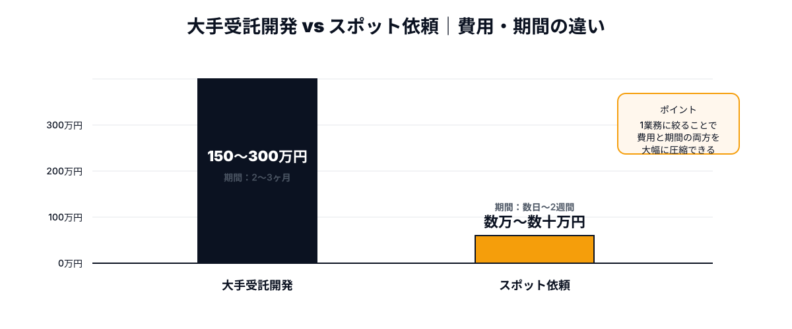
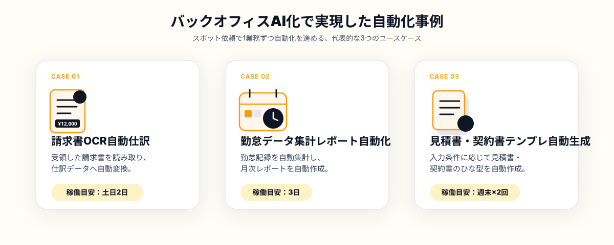

「請求書の処理に毎月何十時間もかかっている」「Excelへのデータ入力をAIで楽にしたいが、何から手をつければいいかわからない」——経理・総務をはじめとするバックオフィス部門では、こうした悩みを抱えながらも実際の改善に踏み出せていない企業が少なくありません。
営業や開発に比べて、バックオフィス業務のAI化は社内で優先度が上がりにくい領域です。しかし、請求書処理・データ入力・勤怠集計といった定型業務は、実はAIによる自動化の効果が最も出やすい領域でもあります。大きな予算をかけずに、週末スポット依頼でこうした業務を自動化する企業が増えています。
この記事では、バックオフィスのAI化がなぜ後回しにされやすいのか、その壁をスポット依頼でどう乗り越えるのか、そして実際にどのような自動化が実現しているのかを具体的に解説します。
バックオフィスのAI化が後回しにされる理由
多くの企業で「バックオフィスのAI化」が検討段階で止まってしまう背景には、いくつかの共通したパターンがあります。まず、売上に直結しない業務であるため、経営判断として投資の優先度が下がりやすいことが挙げられます。営業支援システムやプロダクト開発には予算がつきやすい一方、経理・総務の業務改善は「後回し」にされがちです。
次に、社内に技術的な知見を持つ人材がいないという問題です。「請求書をOCRで読み取って自動仕訳する」というアイデアはあっても、それを実装できるエンジニアが社内にいなければ、構想のまま止まってしまいます。
そして、大手のシステム開発会社に相談すると、業務システム全体の刷新を前提とした提案になりやすく、見積もりが数百万円規模になることも珍しくありません。「請求書処理だけを自動化したい」という小さな要望に対して、過剰な提案がされてしまうのです。
- 売上に直結しないため、投資の優先順位が後回しになりやすい
- 社内にAI・自動化を実装できる人材がいない
- 大手開発会社に相談すると、規模の大きい提案になり予算が合わない
これらの壁を越える現実的な方法が、「1業務だけ」を切り出して週末スポットでエンジニアに依頼するアプローチです。大規模なシステム刷新ではなく、「請求書処理だけ」「勤怠集計だけ」というように対象を絞ることで、低コストかつ短期間でAI化の効果を確認できます。
大手受託開発とスポット依頼、コスト構造の違い
バックオフィス業務のAI化を大手の受託開発会社に依頼する場合、要件定義・基本設計・開発・テスト・導入支援といった工程がフルセットで提示されることが多く、トータルでの稼働期間も2〜3ヶ月、費用も150万円〜300万円程度になるケースが一般的です。一方、スポット依頼で「請求書OCR機能だけ」のように対象を絞ると、必要な工数そのものが小さくなるため、費用と期間の両方を大幅に圧縮できます。

もちろん、スポット依頼は「全社的な基幹システムの刷新」のような大規模案件には向きません。しかし、請求書処理・データ入力・レポート作成といった業務単位で切り出せる自動化であれば、スポット依頼の方が費用対効果は高くなりやすいというのが実態です。
スポット依頼でバックオフィス業務をAI化する3ステップ
実際にバックオフィス業務のAI化をスポット依頼で進める場合、次の3ステップで検討すると進めやすくなります。
STEP1｜自動化したい業務を1つに絞る
最初に行うべきは、「バックオフィス全体をAI化したい」という大きな目標を、具体的な1業務まで絞り込むことです。「請求書をPDFで受け取って手作業で会計システムに入力している」「毎月の勤怠データをExcelで集計してレポートを作っている」など、毎月・毎週繰り返している定型作業がスポット依頼に向いています。
対象業務を絞り込む際は、「作業時間が長い」「ミスが起きやすい」「担当者が固定されてしまっている」という条件に当てはまる業務を優先すると、AI化による効果を実感しやすくなります。
STEP2｜必要な技術要件を明確にする
対象業務が決まったら、技術要件を整理します。「請求書のPDFやFAXをテキスト化したい」のであればOCR技術、「複数のシステムからデータを集めて1つのレポートにしたい」のであればAPI連携やスプレッドシート出力の知識が必要になります。
すべてを正確に把握できなくても構いません。「読み取りたい書類のサンプル」「現在Excelで行っている作業の手順」を用意できれば、ANKEN側でその業務に適したエンジニアのスキルセットを判断し、マッチングをサポートします。
STEP3｜スポットエンジニアに依頼し週末で検証する
業務とスキル要件が固まったら、スポットエンジニアに依頼します。バックオフィス業務の自動化は、既存のOCR APIやスプレッドシートAPIを組み合わせる実装が中心になることが多く、ゼロからの大規模開発に比べて短期間でプロトタイプを作りやすいのが特徴です。週末2〜3日のスポット稼働で、実際の業務データを使った動作確認まで進められる場合があります。
プロトタイプができた段階で、現場の担当者に実際に使ってもらい、フィードバックを次の依頼に反映する。このサイクルを回すことで、社内の運用に合った形に自然と仕上がっていきます。
実際にスポット依頼で実現したバックオフィスAI化の事例

ANKENを通じたスポット発注の事例から、実際にどのようなバックオフィス業務のAI化が実現しているかを紹介します。
まず多いのは、請求書のOCR読み取りと自動仕訳です。PDFやスキャンした請求書を読み取り、取引先・金額・日付を自動抽出して会計システム向けのCSVを出力する仕組みです。週末2日のスポット稼働で、月次の請求書処理にかかる時間を大幅に削減できたという事例があります。
次に、勤怠データの集計レポート自動化です。複数の勤怠管理ツールやExcelファイルからデータを集め、残業時間や有給消化率を自動でまとめてレポート化するスクリプトです。月初に手作業で行っていた集計作業が、ボタン1つで完了する状態まで、週末1回のスポット稼働で仕上げた例があります。
また、見積書・契約書のテンプレート自動生成も需要が増えています。案件情報を入力すると、過去のテンプレートをもとに見積書や契約書のドラフトを自動生成するツールです。営業担当者が「自分で微調整して使える」レベルまで、週末2〜3日のスポット作業で仕上げた事例があります。
- 毎月・毎週決まった手順で繰り返している定型作業である
- 既存のOCR・API・スプレッドシートツールを組み合わせて実装できる
- 業務範囲が1つの部署・1つの作業に閉じており、関係者が少ない
- 現場担当者からすぐにフィードバックを得られる体制がある
共通しているのは、「まず1つの業務だけを自動化してみる」というスモールスタートの姿勢です。バックオフィス全体を一気に変えようとせず、効果がわかりやすい業務から着手することで、スポット依頼でも確実に成果を出しやすくなります。
よくある質問
- Q. バックオフィスのAI化は高額になりませんか？
- A. 大手受託開発では高額になりがちですが、週末スポット依頼なら低コストで実現できます。
- Q. 請求書処理はどうAI化できますか？
- A. AI-OCRで読み取った情報を自動で会計システムに連携させることでAI化できます。
- Q. どんな企業で実現していますか？
- A. 経理担当者が少ない中小企業を中心に、データ入力業務の自動化で実現しています。
まとめ・ANKENへのご相談
バックオフィス業務のAI化は、「全社的なシステム刷新」を前提にすると予算も期間も大きくなりがちですが、請求書処理・データ入力・レポート作成といった業務単位で切り出して依頼することで、低コスト・短期間での実現が可能になります。
重要なのは「自動化したい業務を1つに絞ること」と「既存ツールを組み合わせて実装できる範囲から始めること」です。この2点を押さえたうえでANKENに相談いただければ、業務内容に合ったAIエンジニアを提案します。請求書のサンプルやExcelの作業手順だけでも構いません。固定費ゼロ・週末スポットから、バックオフィスのAI化を進められます。
請求書処理・データ入力・レポート作成など、1業務からの相談を歓迎します。固定費ゼロ・週末スポットから依頼可能です。
👉 無料でスポット依頼を相談する初回相談は無料です。要件が固まっていなくてもOKです。